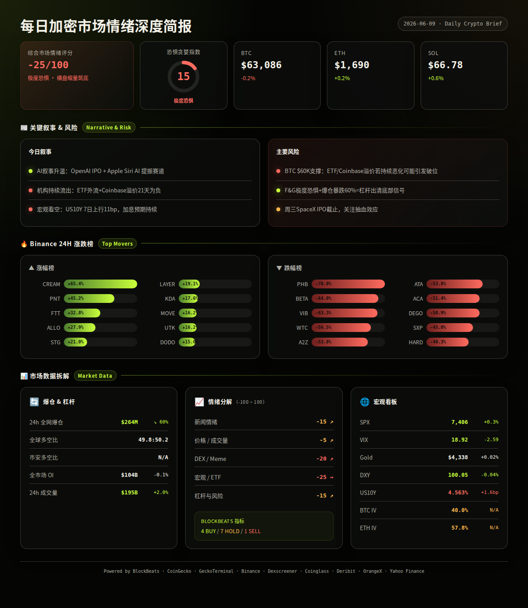
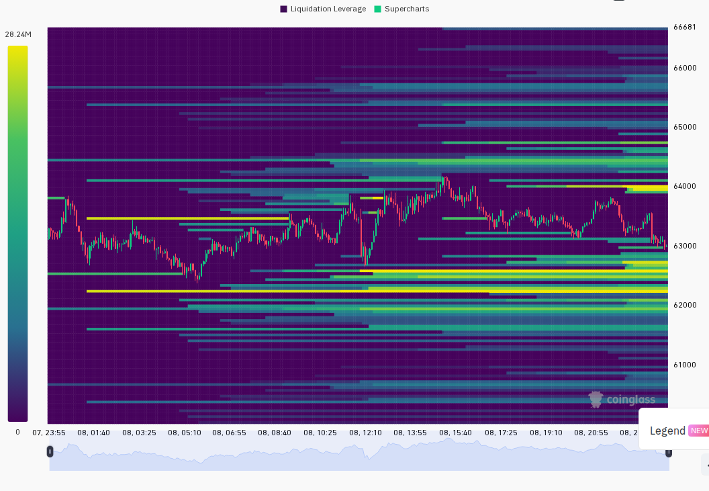
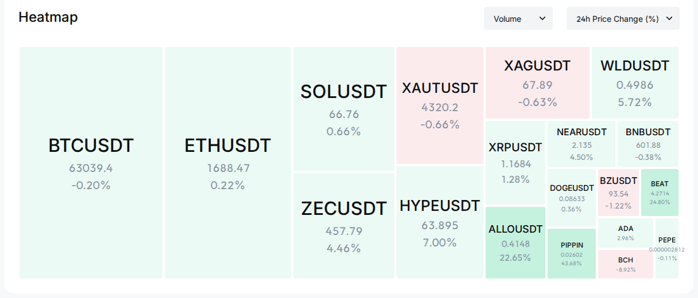

报告已生成。以下是完整报告：
=== 第一段：叙事与风险面 ===
市场处于极度恐惧区间（F&G 15），但恐慌情绪正在降温——24小时爆仓量暴跌60%，BTC在$62,400-$64,200区间窄幅盘整，ETH弱反弹突破$1,700。主导叙事仍是宏观不确定性（美联储加息预期、美债收益率上行）叠加机构持续流出压力（Coinbase溢价连续21天为负）。然而，链上出现积极信号：Solana净流入由HYPE领衔，USDC增发$750M暗示新资金入场。
24h变化: 情绪↗(F&G 15较昨8大幅回升) | BTC ↗0.0%(基本持平) | ETH ↗0.2% | SOL ↗0.6% | VIX 18.9(正常) | 成交量↗2% | 爆仓↘60% (multi-source)
BTC / ETH / SOL
信息 1: 加密市场小幅反弹，BTC一度重回$64,000上方，ETH突破$1,700，但反弹力度有限，$540M空头被清算后涨势未持续 (BlockBeats)
信息 2: 合约巨鲸「先定10个大目标」平掉半数BTC多仓，止盈目标设于$65,000-$66,000，止损位$59,500——暗示大户在关键阻力位获利了结 (BlockBeats)
信息 3: 闪电鲸鱼「nemorino.eth」均价$1,692买入6,329 ETH，显示聪明钱在$1,700下方有抄底意愿 (BlockBeats)
信息 4: BlackRock向Coinbase存入3,300 BTC和15,095 ETH——机构可能在减仓或仅为托管转移，需持续关注 (BlockBeats)
ETF / 宏观 / 监管
信息 5: 分析师预计BTC ETF 6月将持续净流出，中下旬或趋于稳定甚至小幅转正；Coinbase BTC溢价指数连续21天为负值，反映美国市场持续抛压 (BlockBeats)
信息 6: 美银警告美股熊市信号强度加剧，17/20估值指标显示「统计显著高估」，S&P 500已触发70%的熊市信号——若美股回调，加密市场面临联动风险 (BlockBeats)
信息 7: SPX收7,406点(+0.3%)，VIX报18.92(正常区间)，但5日仍涨20%；DXY 100.05基本持平，US10Y 4.563%(24h +1.6bp, 7d +11bp)——美债收益率持续上行构成风险资产逆风 (Yahoo Finance, BlockBeats)
DeFi / 安全事件
信息 8: Aave创始人就$84.5亿清算事件作出辩护，V4升级将全面改革风险管理系统，旨在防止大规模清算级联——DeFi蓝筹项目的风控升级值得关注 (BlockBeats)
Meme / 小市值代币 / 板块轮动
信息 9: FTT短线暴涨超77%后回落至$0.335，24h仍涨+32.8%；STG +21%，ALLO +27.9%，CREAM +65.4%——小市值代币出现超跌反弹行情，但流动性极薄，风险极高 (Binance)
信息 10: CoinGecko板块轮动：DRC-20领涨+176.6%，Telegram Apps +59.2%，OpenServ生态+55.6%；跌幅榜：ERC 404 -24.5%，账户抽象-15.3%，赛车游戏-15.2%——AI/通讯类赛道受OpenAI IPO及Siri AI叙事提振 (CoinGecko)
信息 11: Circle在Solana网络上增发$750M USDC（分两次$500M+$250M），稳定币供应扩张暗示链上活动回暖和新资金入场 (BlockBeats)
预测市场 / 融资 / VC
信息 12: OpenAI秘密提交IPO申请(S-1)，成为继Anthropic后第二家申请上市的头部AI公司——AI+加密叙事持续升温 (BlockBeats)
信息 13: EDGE Markets完成$2,920万A轮融资（CoinFund领投），定位预测市场基础设施——预测市场赛道获VC持续押注 (BlockBeats)
风险 1: Coinbase BTC溢价连续21天为负 + BTC ETF持续流出 → 观察: 若溢价和ETF流出持续至6月中旬无改善，BTC可能测试$60,000心理关口；失效条件: ETF单日转为净流入或Coinbase溢价收窄至零附近。 (BlockBeats, analysis)
风险 2: US10Y 7日上行11bp至4.563%，美银警告美股估值泡沫 → 观察: 若10Y突破4.6%或SPX跌破7,200，风险资产联动下跌概率大增；失效条件: 美联储释放鸽派信号或通胀数据低于预期。 (Yahoo Finance, BlockBeats, analysis)
风险 3: Aave $84.5亿清算虽已化解，但暴露DeFi系统性风险 → 观察: 若BTC再次急跌至$58,000以下，DeFi链上清算级联可能重演；失效条件: 各协议V4升级及时部署且清算参数优化。 (BlockBeats, analysis)
风险 4: 巨鲸多空分歧加剧——部分平多仓止盈，部分抄底ETH，BlackRock疑似减仓 → 观察: 若$65,000上方被巨鲸大规模抛售，反弹可能夭折；失效条件: BTC放量突破$65,000且站稳。 (BlockBeats, analysis)
风险 5: F&G仍处于15(极度恐惧)，历史数据显示底部确认需F&G持续低于25至少3日并结合成交量放大 → 观察: 若后续2日F&G仍低于20但价格不再创新低，底部确认概率上升；失效条件: 价格跌破$60,000伴随F&G进一步下跌至个位数。 (OrangeX, analysis)
非财务建议声明: 本报告仅提供市场数据和情绪分析，不构成任何买卖建议。
6月9日(周一) — OpenAI S-1机密IPO申请披露 — 中性偏多(AI叙事)，利好AI+加密赛道 (BlockBeats)
6月9日(周一) — 日韩股市开盘大涨(KOSPI +4%)，关注亚洲市场风险偏好传导 — 中性偏多 (BlockBeats)
6月11日(周三) — SpaceX IPO认购截止 — 中性，关注IPO抽血效应是否影响风险资产 (BlockBeats, analysis)
6月中旬(预估) — 美联储6月FOMC会议前静默期 + CPI数据发布窗口 — 偏空，加息预期构成压力 (analysis)
持续关注 — BTC ETF日度净流入/流出数据 + Coinbase溢价能否转正 — 关键方向指标 (BlockBeats, analysis)


=== 第二段：数据与技术面 ===
综合评分: -25/100 (↗+10 较昨日预估)
5个情绪维度分解:
新闻情绪: -15/100 ↗+10 — 叙事略有改善：BTC/ETH小幅反弹，AI赛道受OpenAI IPO提振，但ETF流出和宏观担忧仍是主导；BlockBeats指标4买1卖7持有，综合偏底部信号 (BlockBeats, analysis)
价格/成交量: -5/100 ↗+5 — BTC和ETH基本持平，SOL微涨0.6%，成交量小幅回升(+2%)，市场由恐慌抛售转为横盘缩量整理 (Binance, CoinGecko, Coinglass, analysis)
DEX/meme活跃度: -20/100 ↗+5 — Solana DEX有pippin(+42%, $12M成交量)等活跃标的，但多数新池流动性不足；Solana净流入由HYPE(+$6.2M)和ETH(+$1.6M)领衔，链上资金有回暖迹象但尚未形成趋势 (GeckoTerminal, BlockBeats, analysis)
宏观/ETF/流动性: -25/100 ➡0 — US10Y 7日上行11bp，ETF持续流出预期，Coinbase溢价连续21天为负；但VIX 18.9属正常区间，SPX未崩盘，Circle增发$750M USDC提供流动性支撑 (Yahoo Finance, BlockBeats, analysis)
杠杆与风险: -15/100 ↗+10 — 24h爆仓$263.5M暴跌60%，OI持平(-0.12%)，资金费率中立(BlockBeats指标Buy)，多空比49.8:50.2均衡——杠杆出清接近尾声 (Coinglass, BlockBeats, analysis)
BlockBeats 市场底部/顶部指标完整分解:
· 市场脉动指数: 未明确方向
· 整体市场流动性指数: Buy
· 比特币流动性指数: Hold
· 以太坊流动性指数: Hold
· 过去24h累积BTC流动性指数: Buy
· 整体市场流动性(以BTC计): Hold
· 合约多空比偏离指数: Hold
· 山寨币抗跌指数: Sell
· Bitfinex BTC/USD溢价: Hold
· USDC/USDT溢价: Hold
· Binance USDT借贷利率: Buy
· 持仓量加权资金费率年化: Buy
综合: 4 Buy / 1 Sell / 7 Hold — 底部区域信号，机构指标偏多，山寨风险仍在释放中 (BlockBeats)
BTC: $63,086, 24h -0.24%, 24h成交量$14.6亿, 区间$62,408-$64,200. 24小时K线6绿8红(过去12h: 5绿7红)，窄幅震荡格局；期货溢价-0.05%(mark $63,089 vs index $63,118)，轻微贴水偏空但不极端 (Binance)
ETH: $1,690.28, 24h +0.19%, 24h成交量$8.06亿, 区间$1,645-$1,714.5. 最后12h呈震荡回落(7绿5红)，夜盘冲高$1,714后回落；期货溢价-0.04%(mark $1,690 vs index $1,691)，与BTC同步轻微贴水 (Binance)
SOL: $66.77, 24h +0.44%, 24h成交量$2.03亿, 区间$64.98-$68.17. 走势与BTC/ETH分化，相对强势(24h跑赢BTC约0.7%)；期货溢价-0.05%(mark $66.78 vs index $66.81)，同样轻微贴水 (Binance)
全局: 总市值$2.26万亿, 24h成交量$924亿, BTC.D约56%——BTC占比偏高，山寨币表现整体弱于BTC (CoinGecko)
衍生品杠杆(CoinGecko): 全市场BTC永续合约OI约34.2万BTC，Binance Futures居首(34.2万BTC)，Bybit(15.4万BTC)，Hyperliquid(14.1万BTC)，OKX(9.8万BTC)。各主要交易所资金费率均处于正常范围，未出现异常偏离——杠杆情绪中性偏冷 (CoinGecko)
跨平台OI(BlockBeats): Binance $180亿(6月7日)，Bybit $92亿，Hyperliquid $59亿。Binance 24h合约成交量$438亿领先全市场 (BlockBeats)
爆仓数据(Coinglass): 24h全市场爆仓$2.635亿(↘60.42%)，多空比49.8:50.2——爆仓量暴跌说明市场恐慌性清算已大幅缓解，当前处于杠杆出清后的冷却期。爆仓分布接近均衡，无明显的多头踩踏或空头碾压 (Coinglass)
多空比(Coinglass): 全球持仓多空比49.8:50.2(接近均衡)，Binance TV多空比数据暂缺。全市场OI加权多空比偏离指数为Hold——多空博弈未形成一边倒格局 (Coinglass, BlockBeats)
宏观看板: SPX 7,406点(+0.3% 24h, -2.68% 5d)，VIX 18.92(正常区间，24h -12.04%，5d +19.97%)，DXY 100.05(24h -0.04%，7d +0.89%)，US10Y 4.563%(24h +1.6bp, 7d +11bp)，黄金$4,338(24h +0.02%)。BTC与SPX同步横盘，与黄金相关性中性——风险资产整体观望情绪浓厚。DXY 7日走强构成增量利空 (Yahoo Finance, BlockBeats)
期权波动率(Deribit): BTC ATM IV 40.0%(正常区间低端，反映期权市场未定价大幅波动)，ETH ATM IV 57.8%(偏高，ETH-BTC IV利差17.8pp > 15pp阈值)，确认ETH期权市场存在较高投机溢价——山寨币期权活跃度回升 (Deribit)
FTT (Binance): $0.317, 24h +32.8%, 市值$105M. DEX: 流动性极薄(万级), 24h成交量$8.2M. 催化剂: 超跌反弹+破产概念炒作，短线涨幅超77%后回落. 风险: 流动性枯竭，项目基本面为零，高度投机性 (Binance, BlockBeats)
HYPE (Solana): $72.57, 24h 基本持平, 市值约$58M(链上). DEX: 流动性$15.2亿(GeckoTerminal), GeckoTerminal 24h成交量$635K. Solana净流入+$6.24M排名第1. 催化剂: Solana链上龙头meme，持续获得资金净流入. 风险: 鲸鱼已减持83,000 HYPE获利$206万，高位抛压需关注 (BlockBeats, GeckoTerminal)
STG (Binance): $0.261, 24h +21%, 24h成交量$5.4M. 催化剂: 跨链桥概念反弹，Stargate V2升级预期. 风险: 低流动性小市值币，易被操纵 (Binance)
ALLO (Binance): $0.425, 24h +27.9%, 24h成交量$87.3M(异常高). 催化剂: 成交量放大显著，可能有做市商或大资金介入. 风险: 异常成交量可能伴随剧烈波动，注意追高风险 (Binance)
CREAM (Binance): $2.10, 24h +65.4%, 24h成交量仅$276K. 催化剂: C.R.E.A.M. Finance代币，DeFi蓝筹超跌反弹. 风险: 成交量极薄，无实质基本面支撑，高波动假突破概率大 (Binance)
pippin (Solana): $0.026, 24h +41.8%, GeckoTerminal成交量$12.2M, 流动性$3.6M. 催化剂: Solana DEX投机情绪回温，低市值meme资金轮动. 风险: meme币波动极大，流动性适中，炒作周期通常短暂 (GeckoTerminal)
· GeckoTerminal Solana趋势池(24h成交量>$1M): pippin/SOL($12.2M, +41.8%)领跑，RAY/SOL 0.05%($6.7M, +0.6%)常规交易对稳定，CARDS/USDC($1.7M, +3.9%)和TROLL/SOL($1.5M, +5.8%)次级活跃——DEX活动有所回升但量级仍小 (GeckoTerminal)
· BlockBeats Solana链上净流入Top 5: HYPE(+$6.24M), ETH wormhole(+$1.59M), WBTC(+$1.05M), ONYC(+$617K), SYRUPUSDC(+$569K)——HYPE持续获得链上资金青睐，ETH和WBTC主要为跨链桥沉淀 (BlockBeats)
基于全部数据源的综合概率判断：
情景 1 (概率: 45%, 置信度: 中): 横盘筑底延续。BTC在$62,000-$65,000区间继续整理2-5日，等待CPI数据和ETF流向给出方向。关键条件: VIX保持<22，SPX不跌破7,100，BTC不跌破$60,000。若发生则BTC目标$63,000-$65,000, ETH $1,680-$1,720。
情景 2 (概率: 30%, 置信度: 中高): 向下破位。ETF持续流出叠加10Y上行突破4.6%，BTC跌破$60,000心理关口引发新一轮恐慌抛售。关键条件: ETF单日净流出>$200M，或宏观经济数据超预期鹰派。若发生则BTC目标$58,000-$59,500, ETH $1,550-$1,600。
情景 3 (概率: 25%, 置信度: 中低): 反弹突破。Circle增发$750M、AI叙事升温(OpenAI IPO)、以及F&G极度恐惧后均值回归推动BTC反弹至$65,000上方。关键条件: ETF转为净流入，Coinbase溢价转正，SOL继续领涨(山寨先行指标)。若发生则BTC目标$65,000-$67,000, ETH $1,750-$1,800。
以上为基于当前数据的概率判断，不构成交易建议。